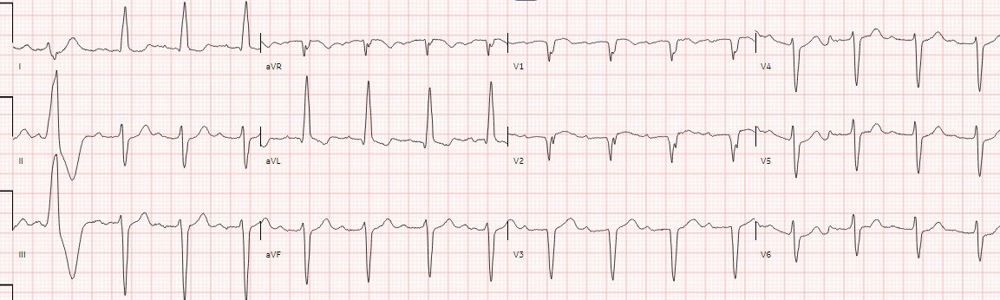
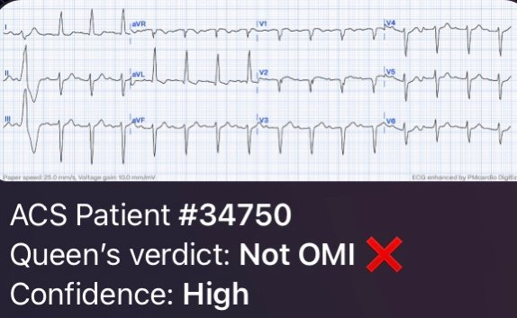
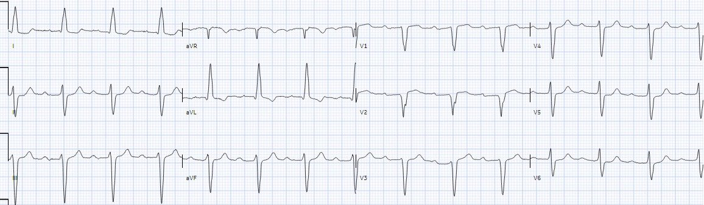
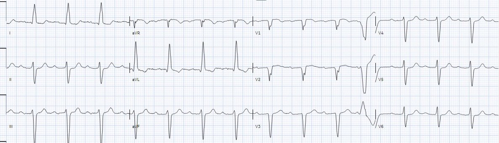
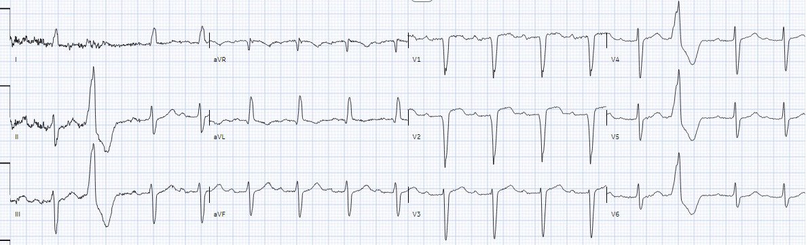
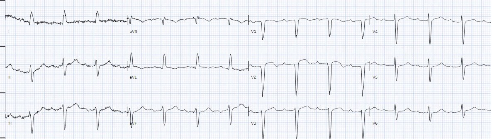
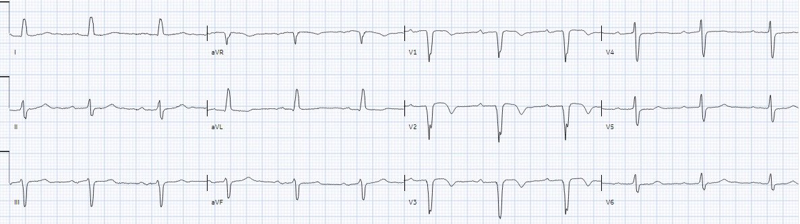
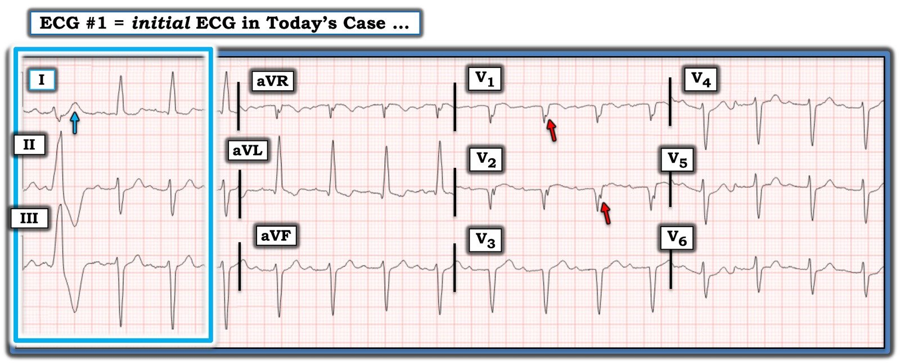

19/04/2024 — OMI có phải là một chẩn đoán điện tâm đồ?
Bản dịch tiếng Việt của bài "Is OMI an ECG Diagnosis?" – Dr. Smith’s ECG Blog. Giữ nguyên toàn bộ 9 hình ảnh của bản gốc.
Bài viết của Jesse McLaren
Bệnh nhân 70 tuổi, tiền sử nhồi máu cơ tim nhiều lần, đã đặt stent LAD và RCA, đến khoa
cấp cứu vì đau ngực khi gắng sức tăng dần trong 2 tuần, lan ra
cánh tay trái, kèm buồn nôn. Cơn đau tái phát khi nghỉ 90 phút trước khi
đến viện, giống như những lần nhồi máu cơ tim trước, và không đỡ sau 6
nhát xịt nitro. Nhân viên cấp cứu ngoài viện cho thêm 3 nhát xịt nitro và 6mg
morphin, giúp giảm đau nhưng không hết đau. Bạn nghĩ gì về điện tâm đồ này, và điều đó có
quan trọng không?


Có nhịp xoang bình thường, LAFB, sóng Q cũ ở thành trước,
và không có dấu hiệu chẩn đoán OMI nào. Tôi đã gửi bản ghi này cho Queen of Hearts


Như vậy điện tâm đồ vừa STEMI âm tính vừa không có dấu hiệu
chẩn đoán tắc mạch tinh tế nào. Nhưng điều này có quan trọng không?
Điện tâm đồ chỉ là mộtxét nghiệm: cách tiếp cận Bayes đối với tắc mạch vành cấp
Nếu một bệnh nhân mới gãy xương đùi đột ngột khởi phát
đau ngực kiểu màng phổi, khó thở và ho ra máu, thì D-dimer
không còn quan trọng: xác suất tiền nghiệm PE của bệnh nhân cao đến mức họ
cần được chụp CT. Tương tự, nếu một bệnh nhân đã biết có bệnh mạch vành (CAD) đến viện vì đau ngực
do thiếu máu cục bộ kháng trị, thì điện tâm đồ hầu như không quan trọng: xác suất tiền nghiệm tắc
mạch vành cấp cao đến mức họ cần chụp mạch vành cấp cứu. Các hướng dẫn về Non-STEMI
yêu cầu “chiến lược xâm lấn khẩn/tức thì được chỉ định ở bệnh nhân
NSTE-ACS có đau thắt ngực kháng trị hoặc mất ổn định huyết động hoặc
điện học,” bất kể dấu hiệu trên điện tâm đồ.[1] Hướng dẫn châu Âu bổ sung thêm “bất kể dấu ấn sinh học”.
Nhưng chỉ 6,4% bệnh nhân ‘Non-STEMI nguy cơ cao’ như vậy được chụp mạch vành
trong vòng 2 giờ.[2] Đó là vì, trái với lập luận Bayes, mô hình STEMI
được đặt tên và định nghĩa theo một phần của một xét nghiệm: ST chênh lên trên
điện tâm đồ. Việc kích hoạt phòng thông tim cấp cứu cũng được đặt tên theo xét nghiệm này (báo động STEMI), nên
những bệnh nhân có điện tâm đồ không đạt tiêu chuẩn STEMI sẽ không được chụp mạch vành cấp cứu,
bất chấp các hướng dẫn.
Độ nhạy của tiêu chuẩn STEMI đối với tắc mạch
vành cấp kém hơn nhiều so với độ nhạy của D-dimer đối với PE: một phân tích gộp
gần đây của ba nghiên cứu duy nhất từng đánh giá tiêu chuẩn STEMI cho thấy
độ nhạy chỉ 43,6%”[3] Việc chuyên gia đọc điện tâm đồ tìm các dấu hiệu điện tâm đồ tinh tế của
nhồi máu cơ tim do tắc (Occlusion MI), và AI được huấn luyện để nhận diện các dấu hiệu này, có độ nhạy gấp đôi
tiêu chuẩn STEMI mà vẫn giữ được độ đặc hiệu.[4] Đây là một
cải thiện lớn, nhưng điều đó cũng có nghĩa là điện tâm đồ dù ở mức tốt nhất vẫn chỉ có độ nhạy 80% đối với OMI. Đó là lý do mô hình OMI không được đặt tên theo điện tâm đồ hay bất kỳ xét nghiệm nào khác – tất cả đều có giới hạn, kể cả chụp mạch vành –
mà theo bệnh lý ở bệnh nhân. Sự chuyển đổi mô hình OMI vừa tối ưu hóa
các đặc tính xét nghiệm của điện tâm đồ, vừa đặt chúng vào bối cảnh của
bệnh nhân – bằng lập luận Bayes.[5]
Quay lại ca bệnh
Bệnh nhân được ghi các điện tâm đồ liên tiếp trong giờ tiếp theo, không có
thay đổi đáng kể:




Troponin đầu tiên trả về là 1.400 ng/L (bình thường <26 ở
nam và <16 ở nữ), khẳng định nhồi máu cơ tim – và tình trạng thiếu máu cục bộ kháng trị
của bệnh nhân cho thấy đây là nhồi máu cơ tim do tắc. Nhưng không có điện tâm đồ nào đạt tiêu chuẩn STEMI nên
bệnh nhân được chuyển khoa tim mạch với chẩn đoán Non-STEMI.
Khoa tim mạch bắt đầu dán miếng nitro (hướng dẫn ACC/AHA nêu rõ rằng miếng dán này không hiệu quả và không nên dùng), với kế hoạch truyền nitro
tĩnh mạch (thay vì thông tim cấp cứu) nếu đau nặng lên. Nhưng khi troponin xét nghiệm lại hai giờ sau tăng lên 9.000
ng/L, bệnh nhân được chuyển đi chụp mạch vành khẩn. Thời gian từ cửa đến thông tim
là 7 giờ, và chụp phát hiện một tổn thương phức tạp hẹp 99% ở lỗ xuất phát (ostial) LAD cùng tổn thương hẹp 80% nhánh bờ tù (OM). Siêu âm tim
cho thấy rối loạn vận động thành khu trú mới ở thành trước và phân suất tống máu giảm từ 60%
xuống 45%.
Bệnh nhân được chuyển tới CCU để cân nhắc các phương án
phẫu thuật. Đau ngực do thiếu máu cục bộ kháng trị vẫn tiếp diễn và troponin tăng lên 160.000ng/L, kèm ST chênh lên dạng lồi tinh tế ở thành trước:




Bệnh nhân được đưa trở lại phòng thông tim để đặt stent LAD
và nong bóng nhánh OM. Troponin đỉnh là 225.000 ng/L và điện tâm đồ lúc ra viện
cho thấy sóng T đảo ngược tái tưới máu ở thành trước


Đây
là một nhồi máu diện rộng do một động mạch vành bị tắc cấp, vậy mà không có điện tâm đồ nào đạt
tiêu chuẩn STEMI (hay OMI). Và vì không có báo động STEMI, chẩn đoán
ra viện là
“non-STEMI”, nên ca này sẽ không được đánh dấu là một cơ hội để
cải tiến. Nếu thay vào đó ca này được xem là một OMI tái tưới máu muộn, thì đã có thể có những bước cải tiến. Ví dụ,
bệnh nhân đã có thể được nhận diện ngay tại khu phân loại (triage)
(hoặc thậm chí sớm hơn, bởi
EMS) là có khả năng cao bị OMI, nên dù
điện tâm đồ không có giá trị chẩn đoán, vẫn có thể hội chẩn tim mạch khẩn kèm siêu âm tim
tại
giường, và kích hoạt phòng thông tim trước khi chờ các lần troponin liên tiếp tăng lên. Nhưng
cách duy nhất để thực sự đáp ứng các hướng dẫn về ‘NSTEMI nguy cơ cao’ là chuyển đổi
mô hình sang nhồi máu cơ tim do tắc (Occlusion MI).
Điều cần nhớ
1.
Tiêu chuẩn STEMI bỏ sót phần lớn OMI, và
các hướng dẫn về ‘NSTEMI nguy cơ cao’ không được tuân thủ vì cả bệnh (STEMI)
lẫn quy trình điều trị (báo động STEMI) đều được đặt tên theo một dấu ấn thay thế kém là ST chênh lên (STE)
2.
OMI là một chẩn đoán lâm sàng kết hợp
việc đọc điện tâm đồ nâng cao, siêu âm tim bổ trợ, và điều trị thiếu máu cục bộ
kháng trị bất kể điện tâm đồ ra sao
3.
Queen of Hearts có thể tăng gấp đôi độ nhạy so với
tiêu chuẩn STEMI mà vẫn giữ được độ đặc hiệu, nhưng cần được áp dụng trong bối cảnh
lâm sàng và không loại trừ OMI nếu xác suất tiền nghiệm cao.
Bạn có thể tải ứng dụng tại đây:
Ứng dụng Queen of Hearts PM Cardio hiện đã có tại Liên minh châu Âu (được chứng nhận CE) trên App Store và Google Play. Với người dùng ở Mỹ, bạn cần chờ FDA phê duyệt. Nhưng trong lúc chờ đợi:
BẠN CÓ CƠ HỘI ĐƯỢC TRUY CẬP SỚM PM Cardio AI BOT!! (ỨNG DỤNG PM CARDIO OMI AI)
Nếu bạn muốn bot này giúp bạn chẩn đoán sớm OMI và cứu bệnh nhân cùng cơ tim của họ, bạn có thể đăng ký để nhận phiên bản beta sớm của bot tại đây. Bot hiện chưa ra mắt, nhưng đây là cách để bạn có tên trong danh sách.
https://share-eu1.hsforms.com/18cAH0ZK0RoiVG3RjC5dYdwfyfsg (biểu mẫu đăng ký truy cập sớm)
Tài liệu tham khảo
1.
Amsterdam và cs. 2014 AHA/ACC guideline for the
management of patients with non-ST elevation acute coronary syndromes.
Tạp chí Circulation, 2014
2.
Alencar và cs. Systematic review and
meta-analysis of diagnostic test accuracy of ST-segment elevation for acute
coronary occlusion. Tạp chí Int J Cardiol, 2024
3.
Lupu và cs. Immediate and early percutaneous
coronary intervention in very high-risk and high-risk non-ST segment elevation
myocardial infarction patients. Tạp chí Clin Cardiol, 2022
4.
Herman, Meyers, Smith và cs. International
evaluation of an artificial-intelligence-powered electrocardiogram model
detecting acute coronary occlusion myocardial infarction. Tạp chí Eur Heart J Digital
Health, 2024
5.
McLaren và Smith. A Bayesian approach to acute
coronary occlusion. Tạp chí J Electrocardiol, 2023

===================================
BÌNH LUẬN CỦA TÔI, bởi KEN GRAUER, MD (19/4/2024):
===================================
Một ca bệnh sâu sắc của BS. McLaren — nhấn mạnh tầm quan trọng của việc áp dụng Định lý Bayes vào bệnh sử lâm sàng. Nói cách khác — “Khi nghe tiếng vó ngựa — Hãy nghĩ đến ngựa (chứ không phải ngựa vằn).”
- Như BS. McLaren đã nêu — bất kể điện tâm đồ ban đầu trong ca hôm nay cho thấy gì, trách nhiệm thuộc về chúng ta là phải loại trừ OMI cấp, chứ không phải ngược lại. Đó là vì “Thời gian là cơ tim” — và bất kể troponin ban đầu và điện tâm đồ ban đầu cho thấy gì — NẾU (theo Định lý Bayes) “khả năng trước điện tâm đồ” của OMI cấp là cao ở một bệnh nhân có CP mới (đau ngực — Chest Pain) — thì ngưỡng để tiến hành thông tim kịp thời cần được hạ thấp (nếu chúng ta còn muốn có chút hy vọng nào rút ngắn thời gian từ cửa đến thông tim khỏi con số 7 giờ không thể biện minh được như trong ca hôm nay).
- Như BS. Smith và BS. Meyers vẫn thường nhấn mạnh — nhiều (có lẽ là hầu hết) “NSTEMI” rốt cuộc lại là OMI (dù phần lớn trường hợp chẩn đoán ra viện vẫn là NSTEMI) — đến mức thuật ngữ “NSTEMI” về bản chất đã trở thành một thuật ngữ vô dụng (Xem các bài ngày 11 tháng Mười năm 2020 và ngày 10 tháng Chín năm 2023 trên Dr. Smith’s ECG Blog).
======================================
Tôi xin bổ sung ĐIỂM THEN CHỐT (PEARL) sau đây vào phần trình bày xuất sắc của BS. McLaren:
- Với khả năng trước điện tâm đồ rất cao của OMI cấp trong ca hôm nay — tôi lập tức hạ thấp “ngưỡng” của mình khi đánh giá điện tâm đồ ban đầu để tìm các dấu hiệu điện tâm đồ “đáng ngờ”.
- Dù không có dấu hiệu OMI cấp nào từ các nhát dẫn truyền từ xoang trên điện tâm đồ ban đầu của ca hôm nay — Ngay cả trước khi xem đáp án, tôi đã rất nghi ngờ nhồi máu cơ tim cấp dựa vào hình dạng của PVC ở chuyển đạo I trong Hình 1 (nhát thứ 1 ở chuyển đạo I, nằm trong hình chữ nhật XANH).
- Trước đây chúng tôi đã đưa ra các ví dụ trong đó OMI cấp chỉ được nhận ra nhờ hình dạng sóng ST-T của một PVC, dù các nhát dẫn truyền từ xoang không có dấu hiệu OMI nào (Xem Bình luận của tôi ở cuối trang trong các bài ngày 8 tháng Mười năm 2018 và ngày 13 tháng Chín năm 2022 trên Dr. Smith’s ECG Blog).
- Dù không có tiêu chuẩn cụ thể nào cho biết khi nào hình dạng sóng ST-T của một PVC chỉ điểm OMI cấp (có lẽ vì không thể nghiên cứu khách quan hiện tượng này trong các thử nghiệm ngẫu nhiên, tiến cứu, có đối chứng) — việc nhận biết những thay đổi sóng ST-T mà lẽ-ra-không-nên-có-ở-đó là tiêu chí chủ quan mà tôi thấy hữu ích nhất.
- Trong khi tôi sẽ không gọi sóng ST-T chênh xuống của PVC ở chuyển đạo II và III trong Hình 1 là có giá trị chẩn đoán (dù mức ST chênh xuống tương đối ở các chuyển đạo này là rõ rệt) — thì sóng T quá cao, “đầy đặn hơn” ở đỉnh và rộng hơn ở chân trong chuyển đạo I (so với QRS rất nhỏ của PVC ở chuyển đạo này) rõ ràng là lẽ ra không nên có ở đó (mũi tên XANH ở chuyển đạo I gợi ý một sóng T tối cấp ở PVC này). Với bệnh sử trong ca hôm nay — ngay cả khi chỉ xét riêng, hình dạng PVC này trên điện tâm đồ ban đầu dường như gợi ý mạnh OMI cấp.


Các điểm bổ sung (Vượt ra ngoài phần cốt lõi — Beyond-the-Core) về việc đọc điện tâm đồ ban đầu của ca hôm nay:
- Mô tả tối ưu bản ghi 12 chuyển đạo trong Hình 1 là một thách thức. Có nhịp xoang với 1 PVC — QRS giãn rộng nhẹ (tới 0,11-0,12 giây) — kèm LAD rõ rệt (trục lệch trái — Left Axis Deviation).
- QRS chưa đủ rộng — và hình dạng QRS không có sóng R đơn pha dương hoàn toàn ở chuyển đạo V6 — do đó không đủ tiêu chuẩn LBBB hoàn toàn. Thay vào đó (như BS. McLaren đã ghi nhận) — tiêu chuẩn LAHB (blốc phân nhánh trái trước — Left Anterior HemiBlock) được thỏa mãn.
- Sóng R quá cao (vượt xa 12 mm) đủ tiêu chuẩn LVH (được củng cố bởi hình dạng sóng ST-T ở chuyển đạo aVL hoàn toàn điển hình cho “tăng gánh” thất trái).
- LƯU Ý: LVH và LAHB, mỗi yếu tố, được ước tính có thể làm tăng thời gian QRS thêm 0,01-0,02 giây (do chậm nhẹ khử cực của một thất trái dày hơn và/hoặc của một thất trái mà phân nhánh trái trước của hệ dẫn truyền không còn hoạt động). Điều này giải thích vì sao QRS trong Hình 1 giãn rộng nhiều hơn mức chúng ta có thể chờ đợi nếu chỉ có LVH hoặc LAHB đơn thuần.
- Dù các sóng QS ở chuyển đạo V1 đến V3 trên điện tâm đồ ban đầu của ca hôm nay đúng là biểu hiện của nhồi máu thành trước cũ — cũng cần hiểu rằng cả LVH và LAHB đều có thể gây tăng tiến sóng R chậm, kể cả xuất hiện sóng QS ở thành trước (LVH do ưu thế của các lực hướng ra sau từ thất trái lớn làm suy giảm các lực sóng r hướng ra trước — còn LAHB do khử cực hướng ra sau qua phân nhánh trái sau, không còn bị “đối trọng” bởi phân nhánh trái trước đã bị blốc).
- Dù có đồng thời LVH và LAHB — hiện tượng phân mảnh thấy rõ trên sườn lên của sóng S ở chuyển đạo V1 và V2 (mũi tên ĐỎ) củng cố giả thuyết rằng các sóng QS ở thành trước là biểu hiện của nhồi máu thành trước cũ.